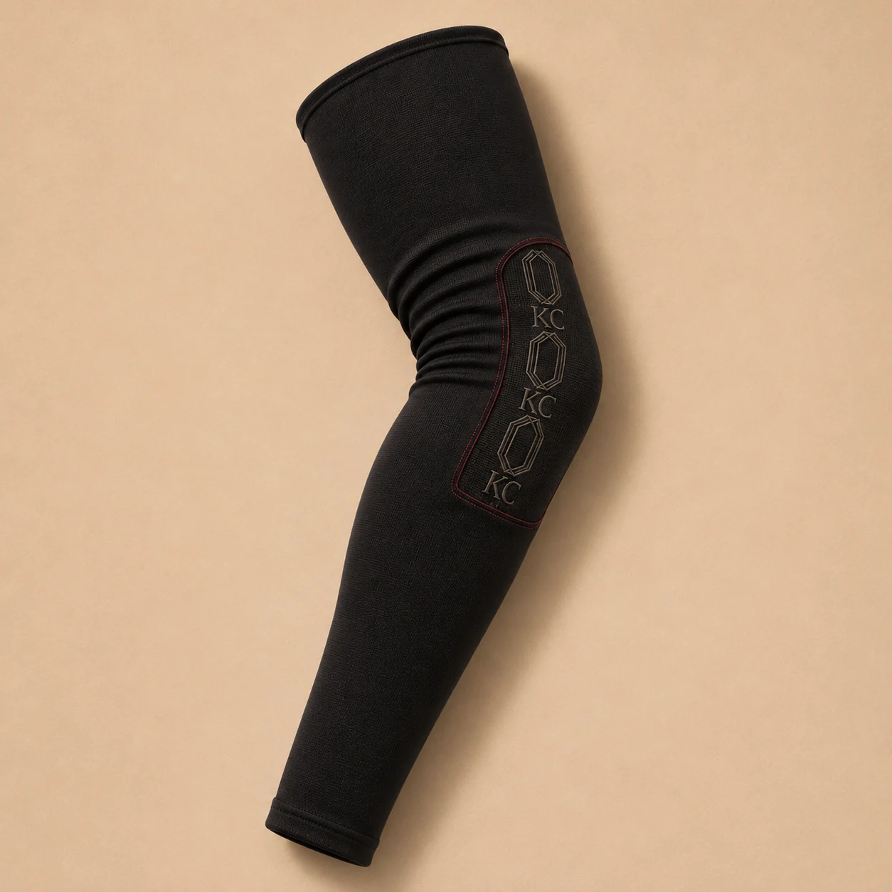
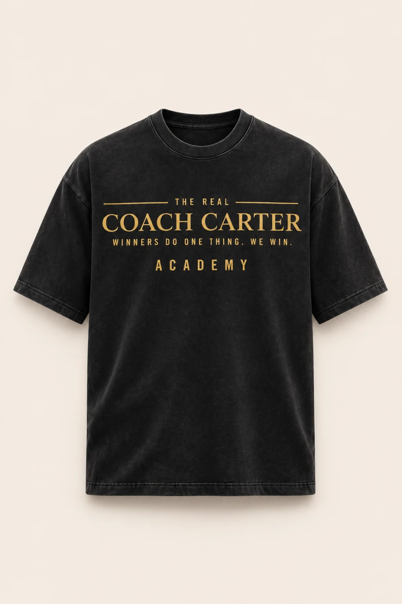
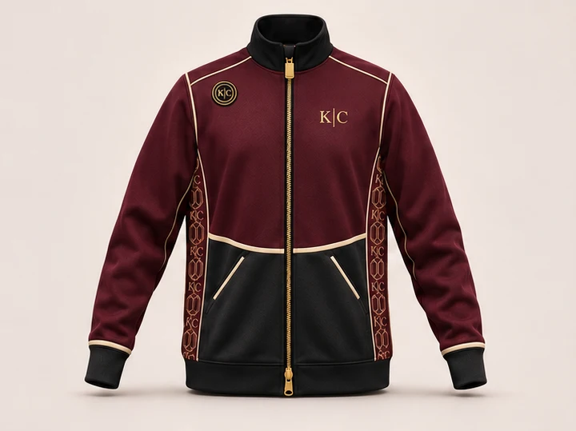

Garment boards
SVG flats show silhouette, panel placement and artwork direction. They are editable development references, so fit, fabric and print placement still need confirmation against a physical sample.

Coach Carter Academy · Design Library
The Academy wardrobe starts with two uniforms. The Court Collection is built around basketball. First Whistle is what the team wears to arrive.
Use the garment boards to study shape and artwork, the lookbook to compare styling, and the store to see which pieces go together.
Visit the Academy store preview ↗Read this library first
Choose a reference based on what you need to check: the garment, the styling or the artwork.
SVG flats show silhouette, panel placement and artwork direction. They are editable development references, so fit, fabric and print placement still need confirmation against a physical sample.
AI styling studies show how the pieces can be layered and photographed. Use them to brief photography and styling. Check fit and materials against physical samples when available.
Wordmarks, motifs and color tokens are the reusable source files. Download the asset you need instead of tracing a screenshot or lifting artwork from a campaign image.
01 / Court Collection
Start with the Court Tee and Court Short to see the base set. Compare the Arc 05’s curved hem and bone insert with the Next Up Short’s relaxed cut and maroon panels. The First Team Set pairs a bone graphic tee with maroon mesh shorts.
Editable development drawings. Fit, fabric and print placement are provisional. Compare these concepts with the shorts in the store preview ↗.


02 / First Whistle
Soft sport coat, charcoal slacks, bone Oxford. Flash of the Court Map lining when the jacket opens. Separate fit blocks for kids and teens.
Compare the three boards as an outfit: the open Oxford collar sits inside the sport coat lapels, and pleats give the charcoal trousers room through the hip. See the collection preview ↗.


First Whistle / Campaign lookbook
Six AI styling studies follow Academy players from the school hallway to the court. The lining repeat and warmup flats are editable design concepts.
Explore the six looks in the store ↗


05 / Product photography
These catalog views make the design boards easier to read as finished product references. They are still development-preview photography and render studies, so use the caption and product page to distinguish a garment view from a styling concept.

Studio garment view · development preview
Open product page ↗
Product study · concept photography
Open product page ↗
Product study · concept photography
Open product page ↗
Product view · AI garment rendering
Open product page ↗
Product view · concept rendering
Open product page ↗
Front product view · concept rendering
Open product page ↗03 / Art Direction
Use these studies to brief a photographer and stylist. Store product photography will come from real athletes in approved samples.


04 / Editable Brand Assets
Use the Academy wordmark for all gear. The Arc panel carries the silhouette. The basketball and full-court map carry the artwork.
Download digital color, typography and asset tokens ↓ · Maroon wordmark for light backgrounds ↓
Call out the garment, artwork and open decisions separately. A board can show intent without settling construction details.
Choose one lookbook study and note the outfit, location and movement it illustrates. Include a sample reference when available and keep the AI styling caption attached.
Share the SVG, token file and any linked production note together. Record changes against the source asset so the next review sees the same version.